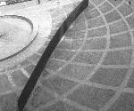

呂清夫 撰文

一九七九年美國「國家藝術基金」受「公共服務署」（GSA）之託，推薦了塞拉（r.Serra）的「傾斜之弧」，為曼哈頓聯邦廣場設置永久性的公共藝術。其設計案提出於一九八○年，並於次年設置完成，這件作品是一個很長的弧形牆面，幾乎把廣場分成了兩半。塞拉是個著名的「最低限藝術家」，照理說，名家的名作應該可使公共場所蓬蓽生輝，民眾也應該感到高興才對，但其實則不然，因為作品一完成，有人便開始不高興。這件作品在製作之初，聯邦廣場旁邊的國際貿易法庭的主任裁判官e.d.雷依便對該作品充滿敵意，並在一九八一年，向「公共服務署」寫信抵制該作品，其後他又契而不捨，一九八四年他再度向華盛頓方面寫信發起抵制運動。結果「公共服務署」紐約支部的行政官W.戴蒙也開始站到雷依這一邊，並從一九八四年起開始加入撤除該作品的運動。針對此問題所組成的委員會雖作了撤除的決定，但此外的組織仍有人主張保留不拆，有人甚至認為作品的被裁撤乃因美國沒有參加藝術家的國際人權組織之故。此事其後發展為訴訟問題，終至使得媒體、社區都捲入了大規模的辯論。至一九八九年，美國政府還是決定，把該作品撤掉。目前的聯邦廣場除了中央的噴泉以外，就只剩下樹木和椅子而已了。在台灣，民眾對於公共設施，通常是冷漠以對，不過學生好像不太一樣。一九九四年九月剛開學的時候，東海大學的學生被「大學路」上突然出現的大批石塊群弄得傻眼了，原來校方曾在暑假期間在校園安置了大批石塊，就像傳統的庭園假山那樣安排，並認為這樣可以美化校園，但是學生則不領情，他們認為，不如用這些錢去整修黑板或課桌椅。不僅如此，「大學路」也從此被改稱「德耀路」，用以紀念卸任的前任校長，而「德耀路」三個大字即被刻在其中的六個大石頭上面。 由於事出突然，景象突兀，學生於是撥之以油漆，裹之以膠布，並在膠布上寫大字報鳴鼓而攻。有些較小的石頭被推開，鑲在石頭上的銅片則被挖掉……。類此激烈的反應，真可以給那些獨斷的公共設施一個很好的警惕。在日本關西的寶塚車站前也發生過類似的事。那裡曾經樹立過一件法國「新現實主義」的作品，作者雖是很有名的阿耳曼（F.Arman），台灣的美術館也有收藏他的作品，但是民眾不喜歡就是不喜歡。該作品是將一堆破壞過的小提琴等樂器重新組合起來的龐然大物，猛然一看好像一堆垃圾，使得一些每天路過的上班族大為反感。雖然藝術家與理論家都有一千個理由支持這件作品的亮相，但是民眾管不了這麼多。經過市民屢次抗議之後，該作品還是只有被移走一途。公共藝術如果不能曲高和眾，便無法得到民眾的青徠，純粹藝術可以為兩三人而作，但是公共藝術則必須為千萬人而作了，名家未必人人適合為千萬人而作，所以名家未必都是公共藝術家。